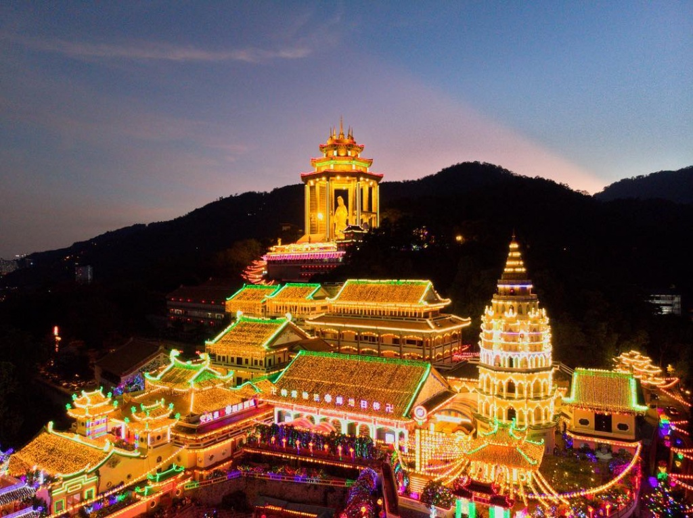

Kek Lok Si Temple: Penang’s Iconic Buddhist Landmark
Kek Lok Si Temple is the largest Buddhist temple in Malaysia, located in Air Itam, Penang. Known for its stunning architecture and the towering statue of the Goddess of Mercy (Kuan Yin), the temple is a symbol of peace and harmony. It features intricate carvings, prayer halls, and the iconic Pagoda of Ten Thousand Buddhas, attracting both pilgrims and tourists alike.
Kek Lok Si Temple, located in Air Itam, Penang, is one of the largest and most important Buddhist temples in Southeast Asia. Construction of the temple began in 1890 and was inspired by the Mahayana Buddhist tradition. The temple complex is built on a hill and offers a stunning view of the surrounding town and hills. It has become not only a religious site for local and international pilgrims but also a popular tourist destination due to its beauty and cultural significance.
The architecture of Kek Lok Si is a remarkable blend of Chinese, Thai, and Burmese styles, symbolizing unity and harmony among Buddhist traditions. One of its most iconic structures is the Pagoda of Ten Thousand Buddhas, which consists of three different styles in one: a Chinese octagonal base, a Thai middle tier, and a Burmese crown. Another standout feature is the giant statue of Guan Yin, the Goddess of Mercy, which stands at a towering 36.5 meters and is visible from afar, representing compassion and protection.​
Inside the temple, visitors can explore various prayer halls, beautifully decorated pavilions, and tranquil gardens. There are also souvenir stalls, a turtle liberation pond, and pathways leading to peaceful spots for reflection. Pilgrims often come to make offerings and prayers, while tourists are drawn by the spiritual ambiance, colorful murals, and intricate carvings found throughout the complex. The temple remains active with daily prayers and religious events throughout the year.

Kek Lok Si is especially breathtaking during the Chinese New Year, when it is adorned with thousands of colorful lanterns and lights, illuminating the night sky and attracting large crowds. This vibrant celebration further enhances the temple's atmosphere, making it a symbol of faith, cultural heritage, and unity. Whether for spiritual reasons or sightseeing, Kek Lok Si Temple continues to be a meaningful and awe-inspiring landmark in Penang.